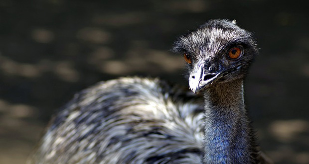
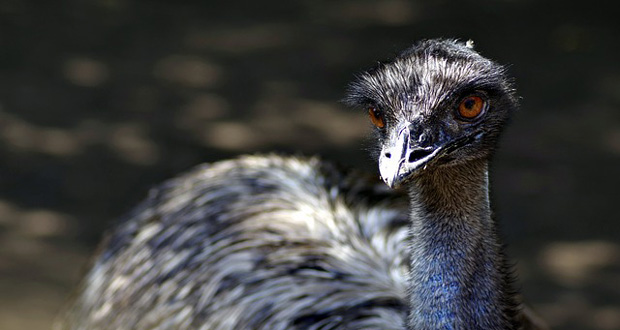

-When? November 2nd 1932.
-Where? A small region in western austrailia.
-How? Emu invasion/ Emu over population.
-Why? Emu's where invading the humans land and eating. destroying all of their crops.
According to many online sources, only about 986 of the 20,000 Emu's were killed. yet it took 9,860 bullets to kill the 986 Emu's. This could be because of miscalculations of ammo needed and how the austrailians had no idea how hard it could be to kill an Emu. Even though they are very tall at around 6ft, they learned to dodge and weave bullets. This war against the Emu's was called apon by the Austrailian government because all the crops were being eaten. It was crucial for the humans to get rid of the Emu's. The time was 1932, the depression, and times were rough already. With giant birds invading farm land was not good at all.
 
